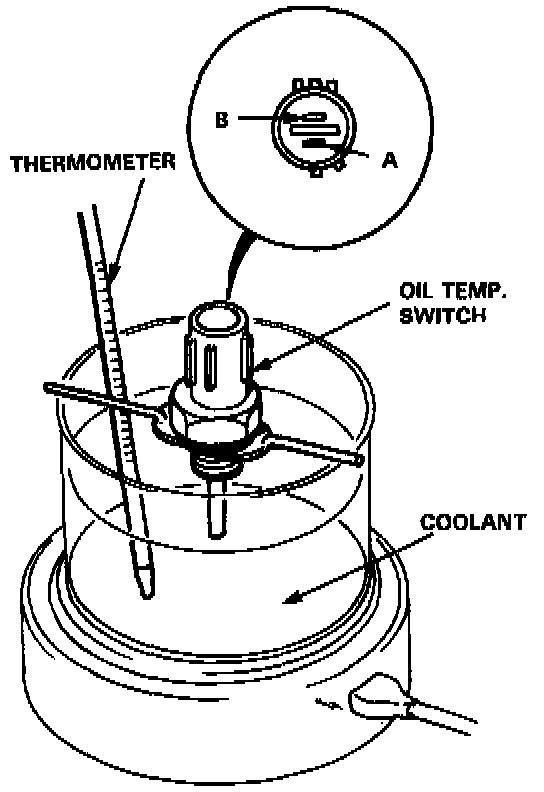
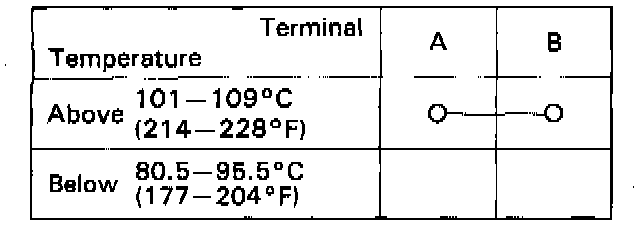

Oil Temperature Sensor/Switch: Testing and Inspection
Oil Temperature Switch Test1. Remove the oil temperature switch from the cylinder head.

2. Suspend the oil temperature switch in a container of coolant as shown.
3. Heat the coolant and check coolant temperature with a thermometer.

4. Check for continuity between the A and B terminals according to the table.